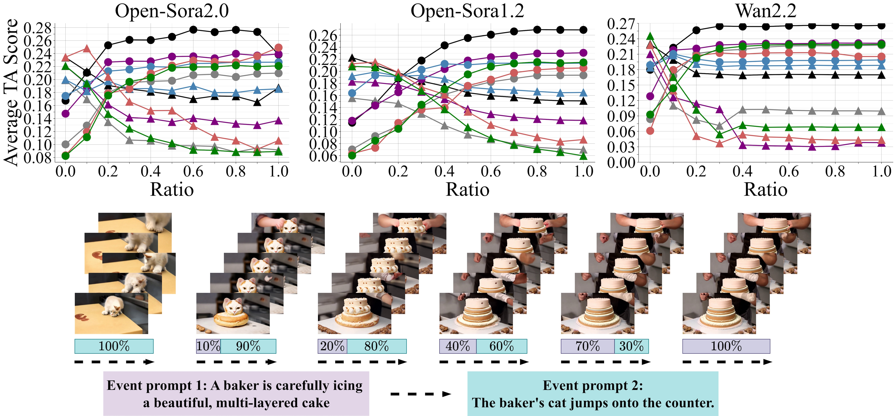
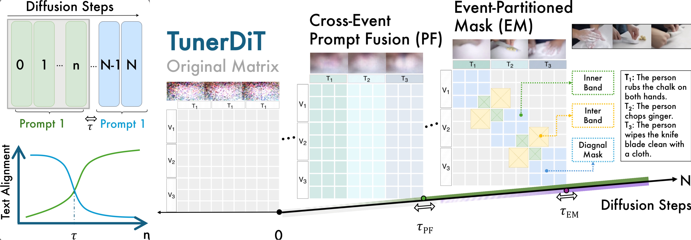

Fig. 1: Different denoising steps are utilizing text inputs differently. TunerDiT finds this insight by probing prompt conditioning of video diffusion models. When switching the input prompt at various fractions of the denoising steps (e.g., 0%, 10%, 20%, 40%, 70%, 100%), it is observed that early steps dominate the global layout while late steps refine fine-grained appearance and motion, revealing intrinsic turning points where text influence changes. Building on this insight, TunerDiT is a training-free, progressive steering method for video DiTs, yielding consistent multi-event videos with clear boundaries and smooth transitions.
TunerDiT is a progressive coarse-to-fine steering framework for multi-event T2V generation that operates without training. It exploits intrinsic turning points in the DiT denoising process by intervening at the appropriate phase to first generate a shared layout of multiple events and refine inner event details at a certain later stage, utilizing two steering handles activated according to a schedule:
1. Cross-Event Prompt Fusion (PF)
2. Event-Partitioned Mask (EM)

Fig. 2: TunerDiT progressively steers multi-event generation over diffusion steps. Cross-Event Prompt Fusion (PF) first shares a common prompt to build a coherent layout, then gradually separates event prompts. Event-Partitioned Mask (EM) subsequently enforces event isolation via diagonal cross-attention blocks and introduces cross-event transition bands around boundaries, enabling smooth and semantically consistent handovers between events.
Comparing TunerDiT with standard base models and existing training-free baselines across sequential events.
OpenSora 1.2
OpenSora 2.0
Wan 2.2
MEVG
DiTCtrl
Mask2DiT
TunerDiT (Ours)
Event Prompt: "A person is drinking a glass of water. Then the person starts cleaning the windows."
OpenSora 1.2
OpenSora 2.0
Wan 2.2
MEVG
DiTCtrl
Mask2DiT
TunerDiT (Ours)
Event Prompt: "A person is checking his phone. Then the person starts watering the plant. Then the person gently touches the leaves of a plant."
Quantitative comparison and preference-aligned evaluation. (a) Quantitative metrics across {TA, TIS, BC, IC, CSCV} and varying shot numbers {2, 3, 4}. (b) VLM-as-a-judge EI/TVA and human user study scores
(a) Quantitative comparison of different models across five metrics
Quantitative comparison of different models across five metrics.
Metrics with the highest value are highlighted in bold and the second best are underlined.
| TA ↑ | TIS ↑ | BC ↑ | IC ↑ | CSCV ↑ | |||||||||||
|---|---|---|---|---|---|---|---|---|---|---|---|---|---|---|---|
| Shot Number | 2 | 3 | 4 | 2 | 3 | 4 | 2 | 3 | 4 | 2 | 3 | 4 | 2 | 3 | 4 |
| Zero-shot Methods | |||||||||||||||
| MEVG | 0.201 | 0.206 | 0.205 | 0.271 | 0.270 | 0.272 | 0.228 | 0.249 | 0.270 | 0.269 | 0.270 | 0.270 | 0.688 | 0.703 | 0.707 |
| DiTCtrl | 0.186 | 0.207 | 0.216 | 0.259 | 0.271 | 0.278 | 0.303 | 0.377 | 0.394 | 0.280 | 0.354 | 0.389 | 0.826 | 0.819 | 0.803 |
| FreeNoise | 0.197 | 0.199 | 0.206 | 0.272 | 0.267 | 0.275 | 0.275 | 0.401 | 0.431 | 0.273 | 0.372 | 0.428 | 0.732 | 0.743 | 0.748 |
| Ours | |||||||||||||||
| TunerDiT Wan2.2 | 0.201 | 0.211 | 0.211 | 0.273 | 0.277 | 0.279 | 0.619 | 0.575 | 0.669 | 0.516 | 0.512 | 0.660 | 0.831 | 0.840 | 0.830 |
| TunerDiT Open-Sora 1.2 | 0.202 | 0.211 | 0.213 | 0.277 | 0.284 | 0.281 | 0.508 | 0.472 | 0.496 | 0.452 | 0.452 | 0.460 | 0.848 | 0.839 | 0.844 |
| TunerDiT Open-Sora 2.0 | 0.210 | 0.213 | 0.219 | 0.280 | 0.277 | 0.287 | 0.501 | 0.532 | 0.496 | 0.411 | 0.488 | 0.466 | 0.866 | 0.883 | 0.854 |
(b) Evaluation metrics with human preference alignment
Left: VLM-as-a-judge for Event Isolation (EI) and Text-Video Alignment (TVA);
Right: Human user study scores (18 persons).
| Name | EI | TVA |
|---|---|---|
| Zero-shot Methods | ||
| MEVG | 0.435 | 1.375 |
| FreeNoise | 0.436 | 1.400 |
| DitCtrl | 0.375 | 1.425 |
| Ours | ||
| TunerDiT Wan 2.2 | 0.474 | 1.503 |
| TunerDiT Open-Sora 1.2 | 0.499 | 1.492 |
| TunerDiT Open-Sora 2.0 | 0.572 | 1.533 |
| Model | Q1 | Q2 | Q3 | Q4 |
|---|---|---|---|---|
| Zero-shot Methods | ||||
| MEVG | 1.82 | 1.91 | 1.82 | 2.05 |
| FreeNoise | 1.99 | 2.01 | 1.99 | 1.79 |
| DiTCtrl | 2.11 | 2.03 | 2.18 | 2.35 |
| Ours | ||||
| TunerDiT Wan 2.2 | 3.01 | 2.97 | 2.82 | 3.30 |
| TunerDiT OpenSora 1.2 | 2.66 | 2.63 | 2.62 | 2.94 |
| TunerDiT OpenSora 2.0 | 3.16 | 3.03 | 3.03 | 3.34 |
@misc{liao2026tunerdittrainingfreeprogressivesteering,
title={TunerDiT: Training-free Progressive Steering of Diffusion Transformer for Multi-Event Video Generation},
author={Ruotong Liao and Guowen Huang and Qing Cheng and Guangyao Zhai and Lei Zhang and Xun Xiao and Thomas Seidl and Daniel Cremers and Volker Tresp},
year={2026},
eprint={2605.31590},
archivePrefix={arXiv},
primaryClass={cs.CV},
url={https://arxiv.org/abs/2605.31590},
}